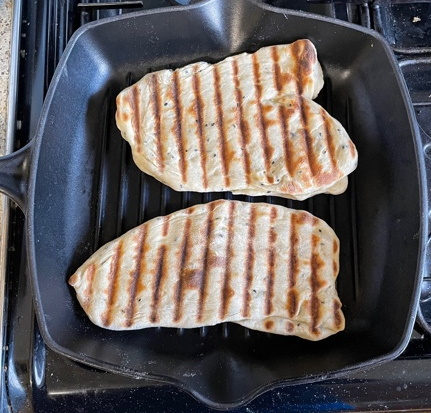

Naan
Yeast
- Put in jug and leave for 15 mins until frothy
- 125ml 43°C water
- 7g sachet of yeast
- 1 tsp golden caster sugar
Mix
- Mix in bowl
- 300g strong white bread flour
- ½ tsp baking powder
- 1 tsp golden caster sugar
- ¾ tsp salt
- Make well in middle and pour in
- 25g melted butter
- 150ml natural yogurt
- 1 tbsp nigella seeds
- yeast mixture
- Stir well, if dry add more warm water, if wet add more flour
Knead and rise
- Put in bread maker on dough setting for 1½ hours
- Or knead for 10 mins then leave for 1 hour until doubled in size
Cook
- Divide into 6 balls with knife
- One by one shape balls into tear drop shape
- Cook two at a time in skillet for 3 mins each side
Notes
- Needs salt for flavour
- Added 1 tbsp toasted sesame seeds, was Ok, seeded, added chewy bits
